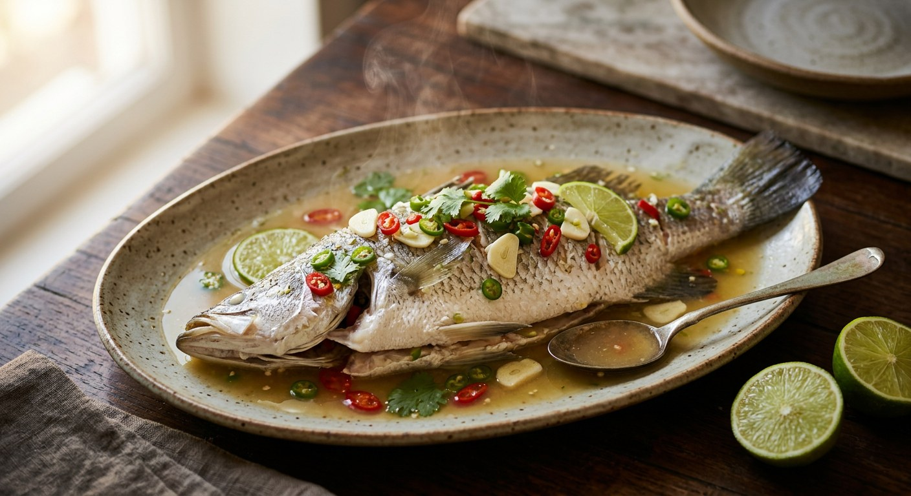

A whole seabass steamed in a dressing of lime juice, fish sauce, garlic and bird's eye chillies — the dish Thai diners order every time they sit down, and one of the easiest fish courses to get right at home.

The name is the method: ปลากะพง (pla kapong) is the seabass — Thai sources spell it กะพง or กระพง interchangeably — นึ่ง (neung) means steamed, and มะนาว (manao) is the lime that does almost all the seasoning. There is no curry, no stir-fry, no marinade: the whole dish is a raw dressing poured over a scored fish, and the steamer does the rest.
That is what makes it the restaurant fish. Wongnai's editors open their recipe by noting that this is the dish people order every time they eat out, and every Thai source here treats it as something you are supposed to be able to reproduce at home — cheaply, in about half an hour. The dressing is essentially a seafood dipping sauce (the น้ำจิ้มซีฟู้ด family) promoted to the main event: fish sauce for salt, lime for sour, garlic and bird's eye chillies for the heat, a spoon of sugar to round the corners.
The other detail every source agrees on is the scoring: diagonal cuts down both sides of the fish so the sauce runs into the flesh instead of lying on the skin. TrueID's version goes further and turns the dish into a full table centrepiece — the steamed fish is lifted onto a bed of shredded cabbage in a hot pot (หม้อไฟ), the steaming juices poured back over it, and the whole thing kept simmering at the table.
| Thai | English | Amount |
|---|---|---|
| ปลากะพง | Whole seabass (or trout) | 1, about 750 g |
| น้ำมะนาว | Lime juice | 9–10 tbsp |
| น้ำปลา | Fish sauce | 7–8 tbsp |
| น้ำตาลทราย | Sugar | 1 tbsp (to taste) |
| น้ำเปล่าหรือน้ำซุป | Water or fish stock | 1¼ cups |
| กระเทียม | Garlic, sliced | 5 cloves |
| พริกขี้หนู | Bird's eye chillies, chopped | 7–8 |
| ขึ้นฉ่าย | Chinese celery, for garnish | 2 stalks |
| มะนาว | Limes, sliced, to garnish | 2 |
The hot-pot version (TrueID): a 700–800 g seabass, 6½ tbsp each of lime juice and fish sauce, ⅔ tbsp palm sugar, 1½ heads of garlic, 20 bird's eye chillies and 4 coriander roots — roots, garlic, chillies, lime and fish sauce whizzed into a rough dressing, half poured over the fish before steaming, the rest over the finished fish in the hot pot with shredded cabbage. The garlic-heavy pot (Pantip): 20 cloves of Chinese garlic and 20 jinda or bird's eye chillies with just 4–5 tbsp lime juice, palm sugar and fish sauce, poured over after steaming. The soy version (Krua.co): a 500 g seabass with 9 chillies, 9 Thai garlic cloves, ¼ cup chicken or pork stock, 1½ tbsp light soy sauce and 3 tbsp lime juice — sauce poured over for the final two minutes of an eight-minute steam.
The steam time. Krua.co and TrueID cook the fish fast — eight to ten minutes over a fierce boil. Wongnai, Kapook and Pantip all steam for twenty minutes. The difference is partly the fish's size and partly taste: the quick school wants the flesh at the point of firm flake; the slow school lets the sauce and juices mingle longer in the plate.
Fish sauce or soy. Four of the five sources season with fish sauce — the default Thai salt. Krua.co's editorial recipe uses light soy sauce with a chicken or pork stock, which makes a milder, rounder dressing. Both produce the same sharp-lime, garlic-chilli profile, but only the fish-sauce version has the funk that makes it unmistakably Thai.
Palm sugar or white sugar. TrueID and Pantip use palm sugar; Wongnai and Kapook use plain white sugar. The quantities are tiny (a tablespoon or less) — the sugar only takes the edge off the lime, it does not sweeten the dish.
When the dressing meets the fish. Wongnai pours the whole dressing over the raw fish and steams everything together. Krua.co steams the fish almost done, then pours the dressing over for the final two minutes. Kapook, Pantip and TrueID dress the fish only after it comes out of the steamer — TrueID even keeps half the dressing back for the table. The later the sauce goes on, the rawer and brighter the lime tastes.
Garlic and chillies — chopped in, or scattered on. Wongnai and Kapook slice the garlic and chillies and scatter them over the finished fish as a garnish. Krua.co and Pantip chop them fine and stir them into the dressing, and TrueID blends them with coriander roots into a rough paste. The garnish approach keeps each bite clean; the chopped-in approach makes every spoon of broth fiery.
What the fish sits in. TrueID steams the fish on shredded cabbage and finishes it in a hot pot over a flame; Kapook serves it in a flame dish too. Wongnai, Krua.co and Pantip steam on a plain plate and serve directly from it. The flame is presentation — the broth stays hot and the table gets the full restaurant effect.
This recipe is translated from the following Thai-language sources. Where they disagree, we've said so.
1. Wongnai — "แจกสูตรฟรี 'ปลากะพงนึ่งมะนาว' รสแซ่บจี๊ดจับใจ สูตรเด็ดพร้อมขาย!" (the recipe used here) — wongnai.com
2. Kapook Cooking — "ปลากะพงนึ่งมะนาว อาหารไทยเปรี้ยวจี๊ด รสแซ่บเป๊ะเว่อร์" by Rin's Cookbook (the recipe used here; the flame-pot serving) — cooking.kapook.com
3. TrueID Food — "สูตรอาหาร ปลากะพงนึ่งมะนาว ทำเองไม่ง้อร้าน พร้อมวิธีการเลือกปลาให้ได้คุณภาพ!" (the hot-pot version with coriander root and cabbage) — food.trueid.net
4. Krua.co — "ปลากะพงนึ่งมะนาว" by the editorial team (the soy-and-stock version, two-stage steam) — krua.co
5. Pantip — "ปลากะพงนึ่งมะนาว น้ำปรุงรสจัดจ้าน เปรี้ยว แซ่บถึงใจ" topic 39711998 (the garlic-heavy 20/20 version) — pantip.com